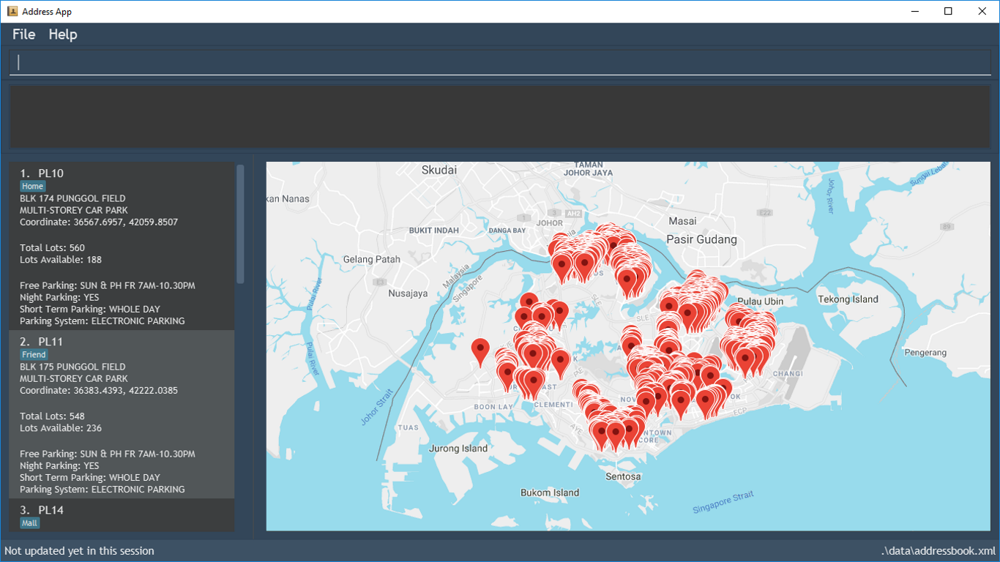

By: Team T09-4 Since: Oct 2018 Licence: MIT
- 1. Introduction
- 2. Quick Start
- 3. Features
- 3.1. Viewing help :
help - 3.2. Finding car parks :
find - 3.3. Select car park :
select - 3.4. Listing entered commands :
history - 3.5. Filter car parks :
filter - 3.6. Sort car parks :
sort - 3.7. Listing all car parks :
list - 3.8. Add favourite car parks or location :
add[coming in v2.0] - 3.9. Remove from favorites list :
delete[coming in v2.0] - 3.10. Data query :
query - 3.11. Notification :
notify[coming in v2.0] - 3.12. Weather update :
weather[coming in v2.0] - 3.13. Clearing all entries :
clear - 3.14. Exiting the application :
exit
- 3.1. Viewing help :
- 4. FAQ
- 5. Command Summary
1. Introduction
The Car Park Finder is an application to find HDB (Housing Development Board) car parks in Singapore. It allows you to work with a Command Line Interface (CLI) to display a list of car parks with the convenience of simply typing. If you use the computer frequently and commute by driving, you would find our application useful in helping you obtain various information about car parks.
2. Quick Start
Here are several quick tips to get the application running.
-
Check that you have Java version 9 or later installed in your Computer.
-
Download the latest carparkbook.jar here.
-
Copy the file to the folder you want to use as the home folder for your Car park book.
-
Double-click the file to start the application. The Graphical User Interface (GUI) should appear in a few seconds.
Figure 1. Home page -
Type the command in the command box and press Enter to execute it.
Some example commands you can try are:
-
list: list your favorites list, with all the car park details
-
help: shows the list of available commands and how to use them
-
exit: exit the program
Refer to Section 3, “Features” for details of each command.
3. Features
Command Format
-
Words in
UPPER_CASEare the parameters to be supplied by the user e.g. infind LOCATION,LOCATIONis a parameter which can be used asfind serangoon. -
Items in square brackets are optional e.g
filter [f/] [n/] [ct/CARPARK_TYPE]can be used asfilter f/ n/ ct/SURFACE ` or as `filter f/. -
Parameters can be in any order e.g. if the command specifies
filter [f/] [n/] [ct/CARPARK_TYPE],filter [n/] [f/] [ct/CARPARK_TYPE]is also acceptable.
3.1. Viewing help : help
Shows the list of available commands and how to use them.
Format: help or h
|
A help window will pop up that contains all the commands available and how to use them. |
3.2. Finding car parks : find
Finds a list of available car parks
Format: find KEYWORD [MORE_KEYWORDS] or f KEYWORD [MORE_KEYWORDS]
|
Upper and lower case characters do not matter. |


Examples:
-
find punggol -
f HG83
3.3. Select car park : select
Select the car park you wish to go to.
Format: select INDEX or s INDEX

Examples:
-
list
select 2
Select the 2nd car park in the address book. -
find sengkang
s 1
Selects the 1st car park in the results of thefindcommand.
3.4. Listing entered commands : history
Lists all the commands that you have entered in reverse chronological order.
Format: history
|
Pressing the ↑ and ↓ arrows will display the previous and next input respectively in the command box. |
3.5. Filter car parks : filter
Filters the list of car parks by free parking, night parking or car park type.
Format: filter [f/ DAY START_TIME END_TIME] [n/] [ct/ CARPARK_TYPE]
or fi [f/ DAY START_TIME END_TIME] [n/] [ct/ CARPARK_TYPE]
|
Must have car parks beforehand. |
Flags:
-
f/ - FREE_PARKING -
n/ - NIGHT_PARKING -
ct/ - CARPARK_TYPE-
SURFACE -
MULTI-STOREY -
BASEMENT -
COVERED -
MECHANISED
-

Example:
-
filter f/ SUN 7.30AM 5.30PM n/ ct/ SURFACE -
fi ct/ BASEMENT
3.6. Sort car parks : sort
Sort the list of car parks by distance or name.
Format: sort FILTER_TYPE or so FILTER_TYPE
|
Must have car parks beforehand. |
Flags:
-
DISTANCE -
NAME -
FP (Free Parking) -
NP (Night Parking)
Example:
-
sort DISTANCE -
so NAME
3.7. Listing all car parks : list
Show a list of all the car parks with their details.
Format: list or l

3.8. Add favourite car parks or location : add [coming in v2.0]
Add a car park into your favorites list
Format: add c/CARPARK_NUMBER or a c/CARPARK_NUMBER
Examples:
-
add c/SE12 -
a c/SE12
3.9. Remove from favorites list : delete [coming in v2.0]
Remove the specified car park from your favorites list
Format: delete c/CARPARK_NUMBER or d c/CARPARK_NUMBER
Examples:
-
delete c/SE12 -
d c/SE12
3.10. Data query : query
Get car park information from data.gov.sg by querying it.
|
You need to run this command to get the latest information on all the car parks. |
Examples:
-
query
3.11. Notification : notify [coming in v2.0]
Set the interval to give updates in real time for all the car parks.
Format: notify TIME_SECONDS or n TIME_SECONDS
|
The default value is 60 seconds. You can set within a range of 10 seconds to 1 hour. |
Examples:
-
notify 60 -
n 60
3.12. Weather update : weather [coming in v2.0]
Include weather updates in the notifications by indicating on or off.
Format: weather TOGGLE
Examples:
-
weather on -
weather off
3.13. Clearing all entries : clear
Clears all entries from the list.
Format: clear
3.14. Exiting the application : exit
Exits the application.
Format: exit
4. FAQ
Q: How do I transfer my data to another computer?
A: Install the application in the other computer and overwrite the empty data file it creates with the file that contains the data of your previous Car Park Finder folder.
Q: If I do not know the postal code of the location, am I still able to find car parks through other means?
A: Yes, by typing keywords like street names.
5. Command Summary
-
Clear :
clear -
Find :
find KEYWORD [MORE_KEYWORDS]
e.g.find punggol -
Filter :
filter [f/FREE_PARKING] [n/NIGHT_PARKING] [ct/CARPARK_TYPE]
e.g.filter f/true n/false ct/multi -
Help :
help -
History :
history -
List :
list -
Query :
query -
Notify :
notify
e.g.notify 60 -
Sort :
sort FILTER_TYPE
e.g.sort DISTANCE -
Select :
select INDEX
e.g.select 2 -
Exit :
exit